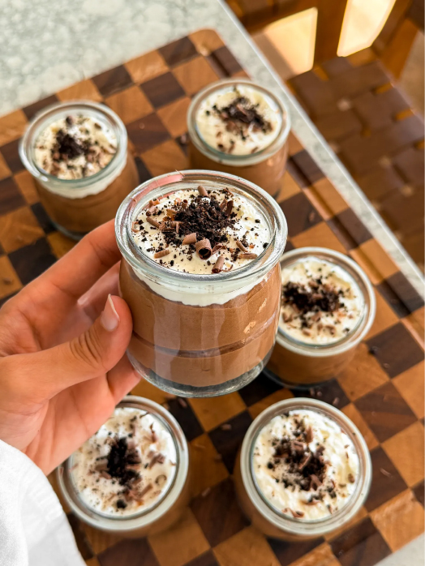
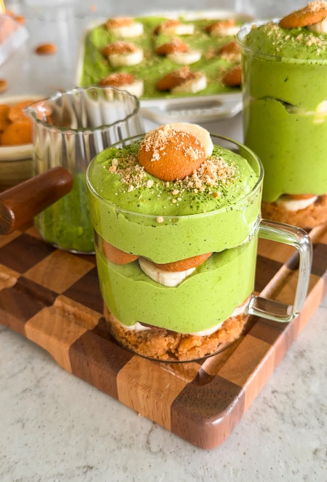

Homepage
My Favorite Recipes
Lazy Cake - Chocolate Salami

Total Time: 25 minutes
When you’re craving something chocolatey but don’t want to turn on
the oven, this lazy cake is the answer. Also known as chocolate
salami, it’s rich, fudgy, and packed with crunchy bits of tea
biscuits and walnuts. Slice it up straight from the fridge for an
effortless, crowd-pleasing treat.
Ingredients
- 7 ounces condensed milk
- 1/3 cup unsalted butter, cubed
- 1/4 cup cocoa powder
- 3/4 cup heavy cream
- 1/2 cup chopped semi-sweet chocolate
- 1 teaspoon vanilla extract
- Pinch of salt
- 8 ounces chopped tea biscuits
- 1 cup chopped walnuts
- powdered sugar, for dusting
Instructions
-
To a saucepan over medium heat, add the condensed milk, butter,
cocoa powder, and heavy cream. Cook, stirring constantly, until
the butter is melted and the mixture is smooth and glossy.
-
To a saucepan over medium heat, add the condensed milk, butter,
cocoa powder, and heavy cream. Cook, stirring constantly, until
the butter is melted and the mixture is smooth and glossy.
-
In a large bowl, add in the chopped tea biscuits and walnuts,
pour the chocolate mix over, and use a rubber spatula to fold
gently until everything is evenly coated.
-
Divide the mixture evenly between two pieces of plastic wrap.
Shape each portion into a log, then roll tightly to seal.
-
Refrigerate until firm, at least 2 hours. Unwrap, dust the logs
generously with powdered sugar, then slice and serve.
Chocolate Mousse Cups
Total Time: 45 minutes

If you want something that tastes like straight chocolate bliss,
these mousse cups are it. They’re creamy, velvety, and so satisfying
without ever feeling heavy. I love how effortless they are while
still feeling like a restaurant-level dessert.
Ingredients
CRUST
- 20 Oreos
- 4 tablespoons unsalted butter, melted
CHOCOLATE MOUSSE
- 1 cup heavy cream
- 2 tablespoons unsalted butter
- 3 to 4 tablespoons granulated sugar
- 6 ounces semi-sweet chocolate, chopped
- 1/2 teaspoon espresso powder
- 1/2 tablespoon vanilla extract
- pinch of salt
- 3 large egg yolks
- 1/2 cup heavy cream
CHANTILLY CREAM
- 3/4 cup heavy cream
- 3 tablespoons powdered sugar
- 1/2 teaspoon vanilla extract
Instructions
CRUST
-
Add the Oreos to a food processor and pulse until very fine
crumbs form.
-
Transfer the crumbs to a mixing bowl. Pour in the melted butter
and mix until the texture feels like wet sand.
- Cover the bowl and set aside.
CHOCOLATE MOUSSE
- Place the chopped chocolate in a medium heat-safe bowl.
-
In a small saucepan over medium-low heat, add the heavy cream,
butter, and sugar. Whisk until the mixture is hot and the sugar
is dissolved, but do not let it boil.
-
Pour the hot cream mixture over the chocolate, cover the bowl,
and let it sit undisturbed for 10 minutes.
-
Uncover and whisk from the center outward until completely
smooth and glossy. Let it cool slightly so it’s warm but not
hot.
- Whisk in the egg yolks until fully combined.
-
Add the espresso powder, vanilla extract, and a tiny pinch of
salt, then whisk again until smooth.
-
In a separate bowl, whip the chilled heavy cream with a hand
mixer or whisk until soft peaks form.
-
Add the whipped cream to the chocolate mixture in batches,
gently folding after each addition until the mousse is light
and airy.
- Cover the mousse, trasnfer to the fridge, and set aside.
CHANTILLY CREAM
-
In a clean bowl, add the heavy cream, powdered sugar, and
vanilla extract.
- Whip with a hand mixer or whisk until soft peaks form.
ASSEMBLE
-
Add a few spoonfuls of the crust mixture to the bottom of each
cup and press down lightly to form an even layer.
-
Spoon or pipe the chocolate mousse on top so each cup fills
about two-thirds to three-quarters of the way up.
- Finish the remaining space with Chantilly or whipped cream.
-
Enjoy right away, or cover each jar and refrigerate for up to
3 days.
Matcha Banana Pudding
Total Time: 7 hours

Inspired by the viral TikTok matcha banana pudding latte, this
dessert layers creamy matcha-infused pudding with sweet bananas and
crunchy Nilla Wafers for the perfect balance of flavors and
textures. The whipped cream and cream cheese add richness, while
the matcha powder gives it a vibrant color and earthy kick. Whether
served in individual cups or a large dish, it’s a refreshing twist
on a beloved classic you have to try.
Ingredients
For Assembly
- 1 box (11 oz) Nilla Wafers
- 5 to 6 bananas, sliced
PUDDING
- 2 cups heavy cream
- 1 teaspoon vanilla extract
- 1 box (3.4 oz) instant vanilla pudding mix
- 1 ⅓ cups cold milk
- 3/4 cup sweetened condensed milk
- 2 ½ tablespoons cream cheese, softened
- 2 to 3 tablespoons matcha powder, to taste
CRUST
- 1 ⅓ cups Nilla Wafer crumbs
- 6 tablespoons (¾ stick) unsalted butter, melted
Instructions
-
In a bowl, whisk together the instant vanilla pudding mix,
matcha powder, and cold milk. Let it sit for 10 minutes to
thicken.
-
Once thickened, add in the sweetened condensed milk and softened
cream cheese. Whisk until completely smooth and creamy.
Set aside.
-
In a separate bowl, whip the heavy cream with vanilla extract
until stiff peaks form—don’t overmix.
-
Fold the whipped cream gently into the matcha pudding mixture
using a rubber spatula. Chill in the fridge while prepping the
rest.
-
In another bowl, combine wafer crumbs with melted butter to
create a crust consistency.
-
In your serving dish (individual cups, a 9x13 pan or a large
trifle dish), begin layering: Start with the crust, then: add
banana slices, a layer of whole Nilla wafers, and followed with
a thick layer of matcha pudding. Then repeat with another round
of bananas, wafers, and pudding.
-
Cover and refrigerate for at least 6 hours to allow the wafers
to soften and flavors to develop.
-
Before serving, garnish each portion with a banana slice, a
whole Nilla Wafer, and a sprinkle of crushed wafers.